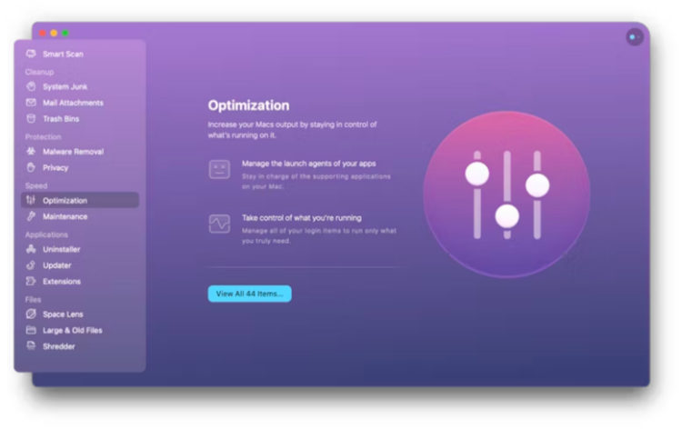
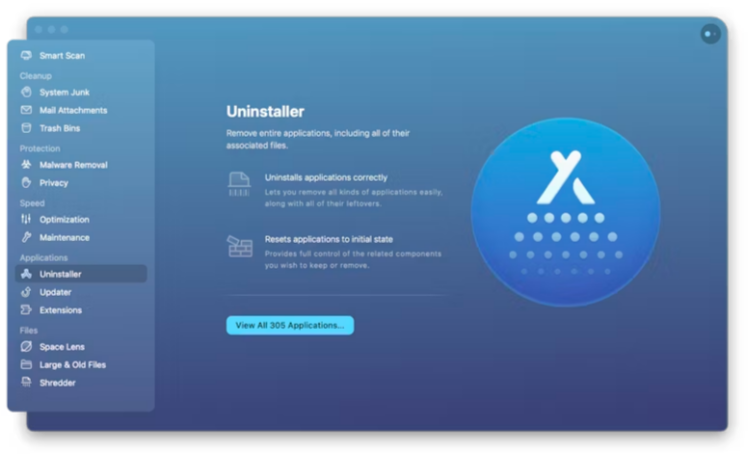

CleanMyMac X
Seu Mac.
Como novo.
O CleanMyMac X é uma solução completa para ter um Mac impecável. Ele limpa toneladas de lixo e deixa o computador mais rápido. Como nos primeiros dias.
A MacPaw é a favor da Ucrânia. Veja como ajudar o nosso país a vencer com apenas alguns cliques
O CleanMyMac X é uma solução completa para ter um Mac impecável. Ele limpa toneladas de lixo e deixa o computador mais rápido. Como nos primeiros dias.
CO CleanMyMac X substitui dezenas de ferramentas de otimização para Mac. Ele pode ser o que você quiser: um app de limpeza para macOS, um monitor de desempenho, um removedor de malware… e se você precisar, um salva-vidas.


O CleanMyMac X busca lixo em todos os cantos do macOS. Ele limpa arquivos desnecessários, como caches desatualizados, downloads incompletos, registros e traduções inúteis. Você pode remover toneladas de acúmulos escondidos no iTunes, Mail e Fotos, além de localizar gigabytes de arquivos ocultos. As ferramentas de limpeza do CleanMyMac eliminam o peso extra em segundos.


Corrigir problemas no Mac pode levar horas. Ou apenas um clique. Nos esforçamos para que o CleanMyMac X seja acessível e claro. Ele existe para fornecer soluções simples, e não para que você abra centenas de pastas ou leia instruções tediosas. Porque limpar o Mac deveria ser fácil. Fácil como clicar em um botão.
O Guia de Segurança do CleanMyMac X diferencia arquivos inúteis de importantes. Ele sabe como o macOS funciona e nunca apaga nada sem perguntar. O assistente inteligente do CleanMyMac X auxilia em limpezas periódicas do disco e até mostra o que mais há para limpar. É como se ele tivesse um doutorado em limpeza segura.
Para cada vez que o Mac engasgar, você pode contar com um arsenal de ferramentas de aceleração: libere a RAM, execute scripts de manutenção, e gerencie Itens de Início, Agentes Iniciais e Aplicativos Travados. Assim, você diminui a carga do sistema e ajusta o desempenho do Mac ao máximo. Quando a sua máquina é produtiva, você também produz mais.

Há vírus no Mac? Não no seu, se você o limpa com o CleanMyMac X. Sua tecnologia antimalware (o Mecanismo Moonlock) criada pela equipe da MacPaw, combate malware, adware, ransomware e todos os outros “wares” que existem para macOS. Ao encontrar algo suspeito, o app o apaga imediatamente. O banco de dados de malware é atualizado regularmente para que você sempre possa contar com os recursos de proteção do CleanMyMac X.
Remova o histórico de navegação e vestígios de suas atividades on-line e off-line.
RRealize um exame abrangente de todos os tipos de vulnerabilidade no Mac.
Para deixar o Mac em ordem, você dispõe da dupla dinâmica Desinstalador e Atualizador. O primeiro remove apps desnecessários por completo e o segundo atualiza automaticamente todo o software. Apps ruins vão embora e novos apps chegam sempre a tempo. Isso ajuda a evitar conflitos em apps e deixa o Mac sempre em dia.

Tempo de inicialização mais rápido
Apps que respondem melhor
Gigabytes de espaço livre
* Teste feito em um MacBook Pro (15 polegadas, 2016) com 512 GB de armazenamento.
O CleanMyMac X tem milhares de horas de experiência, horas essas que você não precisa perder limpando. Por exemplo, a Análise Inteligente faz três trabalhos ao mesmo tempo: ela limpa, protege e acelera o Mac. Experimente o CleanMyMac X e pergunte-se como você viveu sem ele por tanto tempo.
O CleanMyMac X pode cuidar de um número infinito de Macs. Aproveite nossos preços especiais para empresas e instituições de ensino.
Obtenha o CleanMyMac X para ajudar você no Mac. Ele lida com problemas de armazenamento, velocidade e malware. E transforma lixo em espaço livre. Use-o uma vez para se apaixonar.
macOS 10.13 e superior, 210 MB

/ 4.9*
a partir de $34.95
4.15.6, 7 agosto 2024
Nosso pombo‑correio levará até você as melhores ofertas e notícias dos apps da MacPaw.